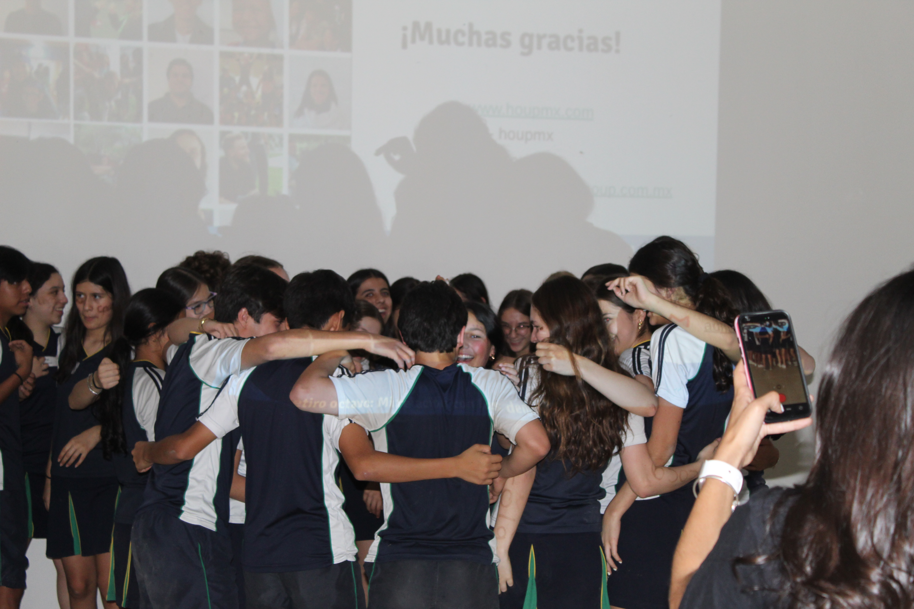
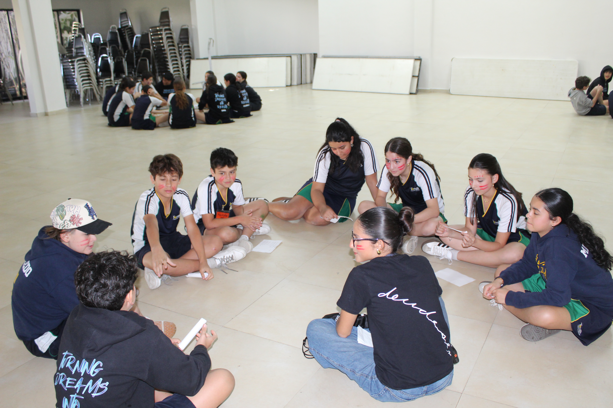

Brillamont 2026
78 alumnos en 8 equipos, acompañados por 8 Compis.

HOUP Educación
A todos nos enseñan matemáticas, geografía e historia. Pocas veces alguien nos sienta a aprender sobre lo que sentimos.
La rama
HOUP Educación acompaña a escuelas privadas en el bienestar socioemocional de alumnos, maestros y familias, de 4° de primaria a noveno, con retiros también en preparatoria.
Nuestro método
Un modelo construido en más de 12 años en escuelas mexicanas, para que la escuela termine operando el bienestar con su propia gente.
Quien acompaña el bienestar de otros lo vive primero.
Una clase de bienestar a la semana: atención plena, dinámica, teoría y reflexión escrita.
Un arco formativo que crece con el alumno: cada etapa, su contenido.
Medición antes y después, con lectura institucional. Nunca se califica al alumno.

Donde todo comienza
Antes de proponer, escuchamos. El diagnóstico le muestra a su escuela cómo está el bienestar de sus alumnos, maestros y familias, qué fortalezas ya tiene y por dónde conviene empezar. Lo construimos con su equipo, nunca a sus espaldas, y nunca califica a un alumno en lo individual.
Qué recibe la escuela
Duración aproximada: 4 a 6 semanas, de la junta de arranque a la lectura conjunta.
Nuestros servicios
Cada servicio se puede contratar de forma independiente o como parte del método F.L.O.R. completo.
Escuelas que confían en nosotros
Momentos reales
78 alumnos en 8 equipos, acompañados por 8 Compis.
Espacios para pausar, reflexionar y conectar.
Un día para que una nueva generación se conozca.
194 asistentes. 72% lo disfrutó "mucho" o "muchísimo".
Sumamos a lo que su escuela ya está haciendo, hombro a hombro con su equipo.